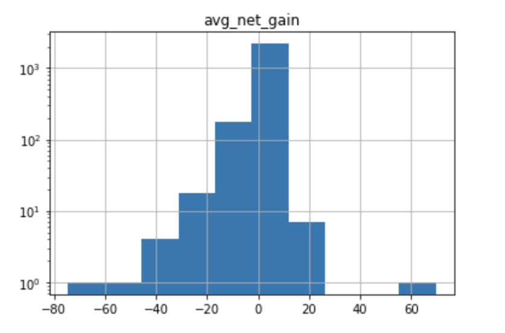
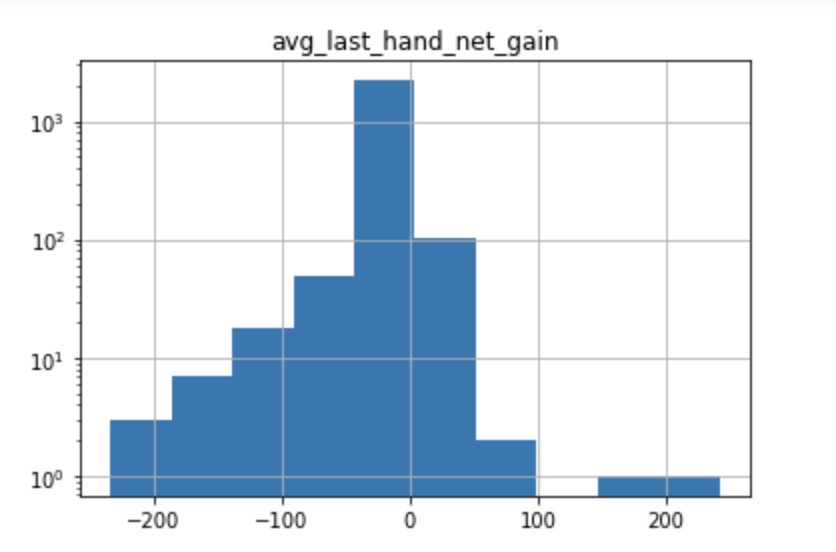

- A defined hypothesis or prediction task, with clearly stated metrics for success.
- Testing H0: P(win | losing on current day) = P(win | winning on current day)
- Given players that have played at least 50 games, 10 of them wins and 10 of them losses.
- Ignoring win streaks from previous sessions.
- Why did you use this statistical test or ML algorithm? Which other tests did you consider or evaluate? How did you measure success or failure? Why that metric/value? What challenges did you face evaluating the model? Did you have to clean or restructure your data?
- We ran z-tests on our datasets to obtain the p-value and evaluate whether to reject the null hypothesis in case there is strong evidence for the alternative hypothesis. We obtained a p-value of .0067
- We also considered running t-tests but our data sets for the tests are very large (much bigger than 30) so we decided on z-test.
- The null hypothesis will be accepted if the p-value is greater than .05. We chose this alpha value because it is common in hypothesis testing.
- We did not face any major challenges evaluating the model, but it did take a while to find a relationship that was significant (we had planned out a few hypotheses to test prior but the first couple were insignificant).
- We had to update our database a few times - once to change the game-ids to include time, and also to include a column indicating the source of the data since the timestamps are not comparable across different data sources.
- What is your interpretation of the results? Do accept or deny the hypothesis, or are you satisfied with your prediction accuracy? For prediction projects, we expect you to argue why you got the accuracy/success metric you have. Intuitively, how do you react to the results? Are you confident in the results?
- We concluded that a player is more likely to win after a losing session, and more likely to lose after a winning session.
- We rejected the null hypothesis: P(win | losing on current day) = P(win | winning on current day)
- We anticipated that players who won the previous game on a current day are likely to win the next game due to (for instance) a player’s increased momentum and confidence.
- Although our results showed otherwise, we are still very confident in our results and analysis. It’s worth mentioning that the dataset included ~260,000 games, so our results may not fully represent players with varying skill levels and playing varying stakes. That said, only taking into account players who have played beyond a threshold of at least 50 games allows our results to be somewhat more conclusive.
- For your visualization, why did you pick this graph? What alternative ways might you communicate the result? Were there any challenges visualizing the results, if so, then what were they? Will your visualization require text to provide context or is it standalone (either is fine, but it's recognize which type your visualization is)?
- We used a bar chart because we wanted to compare two probability distributions with the same x and y axis.
- We could’ve represented this as a scatter plot and taken out outliers, but this would have been more messy and harder to compare visually.
- In general, when making graphs for all of our hypotheses, we had to be careful to take out/not take out outliers because it could skew the graph and affect the results of the comparison. Other than that, we did not have any challenges.
- We will need to provide a little bit of context for the graph

- Full results + graphs (at least 1 stats/ml test and at least 1 visualization). Depending on your model/test/project we would ideally like you to show us your full process so we can evaluate how you conducted the test!
- In our first hypothesis test, we investigated whether the probability that a player wins a current hand given that they won the previous one equals the probability that a player wins a current hand given that they lost the previous one. We constrained the data to only players that have played at least 10 games and have both won and lost 3 of them. We also disregard win streaks from previous sessions (for instance, from the day before to the current day). The results showed that players have a significantly higher probability (35.8% vs 34.0%) of winning a hand given that they lost the previous one both on that day. Z-test yielded a p-value of .0067. The two histograms showing this result can be found above in section D.
- In another hypothesis test we investigated whether players play differently on the last game of the poker session. The results showed that players have a significantly lower average net gain on the last hand. Z-test yielded a p-value of 1.88e-17. Log scale histograms of player net gain distributions are shown below.

- If you did a statistics test, are there any confounding trends or variables you might be observing?
- One confounding variable is each player’s level of skill. Better players will win more often than bad players regardless of whether they are winning or losing overall.
- Describe how you think you will present this on your poster? Will you include a table, text, a graph etc.
- To most accurately explain this relationship, we would provide graphs of the two probabilities that we tested and some text about the actual test (p-values, z-score…)